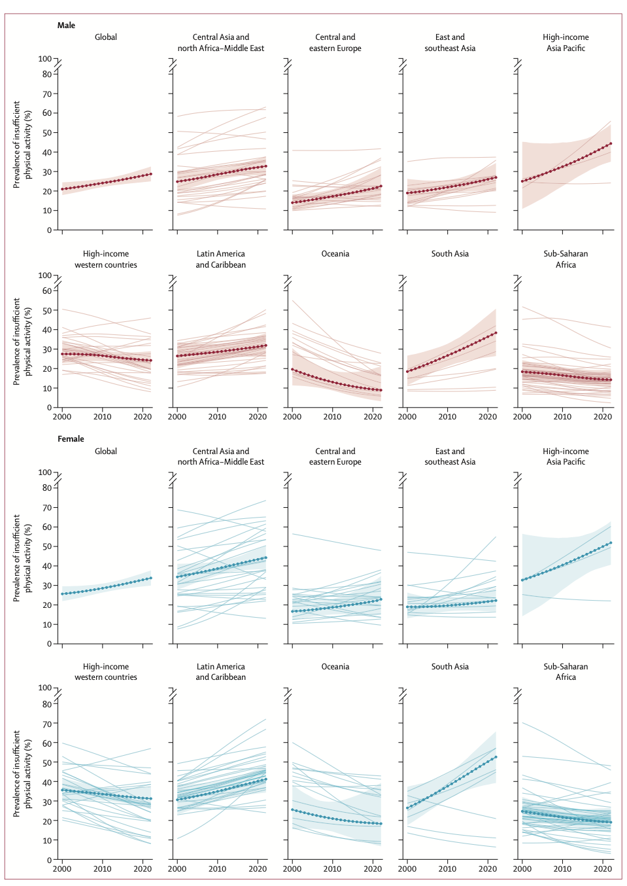
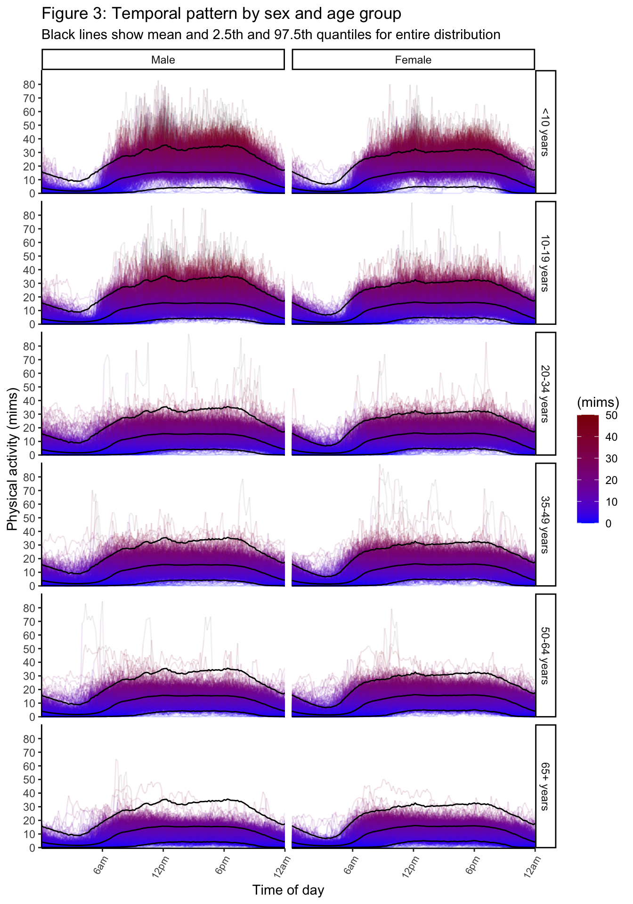
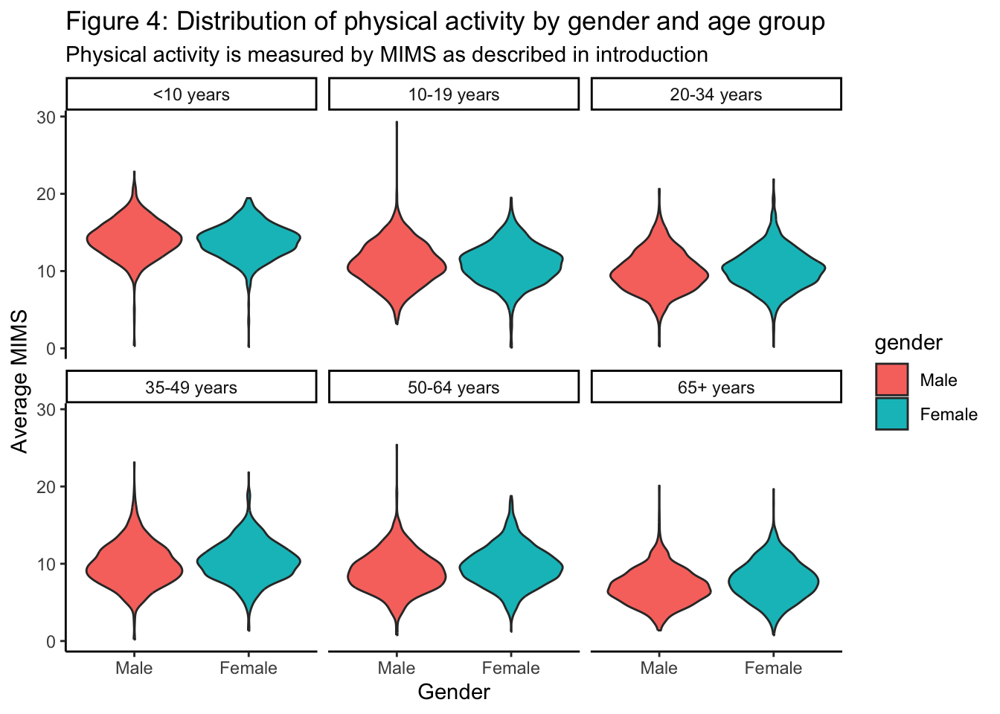
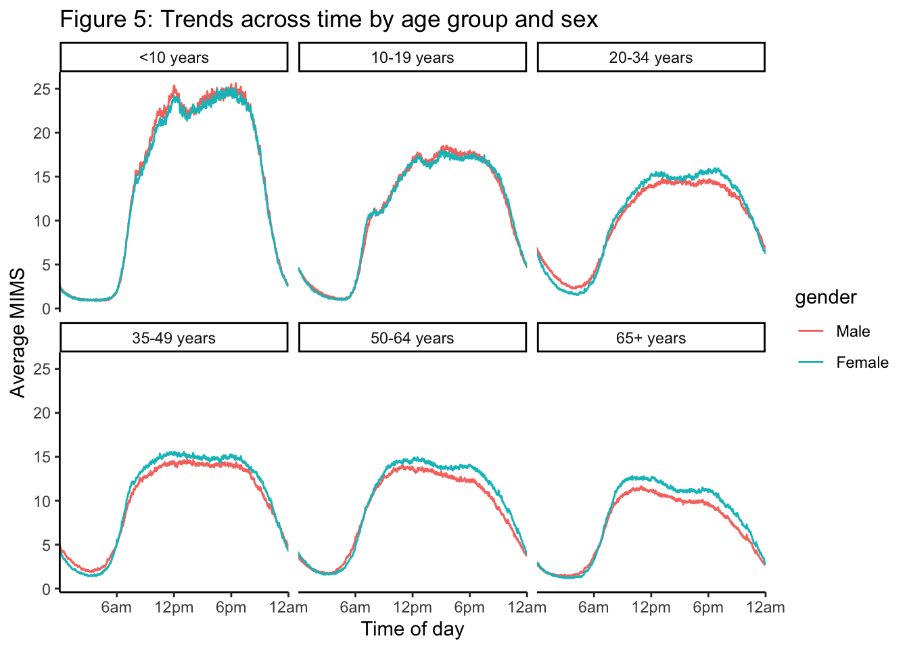
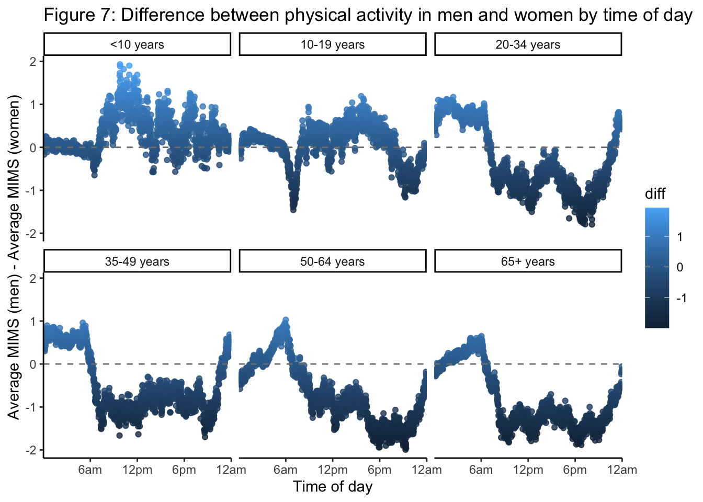

A recent paper showed published in the Lancet (Strain et al. 2024) showed that the prevalence of insufficient physical inactivity has been rising in most regions across the globe. Figure 1 below, taken from this paper, shows this near-universal rise. Furthermore, physical activity has been shown to be a stronger predictor of mortality than age (Leroux et al. 2024). In order to curb and reverse the increasing trends in physical inactivity, and to target interventions for increasing physical activity, it is important to understand variations in physical activity across different population subgroups.

Figure 1: Trends in national prevalence of physical inactivity from 2000 to 2022, taken from Strain et al.
Note
Insufficient physical activity is typically defined as not doing 150 minutes of moderate-intensity activity, 75 minutes of vigorous-intensity activity, or an equivalent combination per week (Strain et al. 2024).
Aims
In this analysis I will attempt to characterise differences in phyiscal activity across different population subgroups using NHANES 2011-2012 and NHANES 2013-2014 cohorts, taken from (Crainiceanu 2023). These differences could of interest to public health practitioners interested in identifying population subgroups with low rates of physical activity, as these subgroups are those worth considering for targeted behavioural interventions.
Monitor-Independent Movement Summary (MIMS).
In the dataset used in this analysis, physical activity is measured by Monitor-Independent Movement Summary (MIMS). This is a measure which compresses acceleration measured by a wrist-worn monitor on the X, Y, and Z axes into a single number, which is standardized across different devices.
Reading Code
My code is presented in blocks with See code labels. Please click on these to view the code.
Data preprocessing
Here is a data dictionary of the variables used and the code used to preprocess these data. Some summary statistics of the data are presented in the margin on the right hand side.
See code
# Initialise, read in data, and generate data dictionaryrm(list =ls())library(tidyverse)library(ggridges)library(grid)library(gridExtra)library(labelled)# Read datadata <-data.frame(readRDS("nhanes_fda_with_r.rds"))# Subset to variables of interestdata <- data %>%select("SEQN", "MIMS", "gender", "age")dictionary <-generate_dictionary(data)labels <-c("Participant ID","Compressed minute-level wrist acceleration each minute", "Participant gender","Participant age")dictionary$label <- labelspretty_dictionary <- dictionary %>%select(-c(pos, missing, levels, value_labels))knitr::kable( pretty_dictionary, label ="Data Dictionary")
variable
label
col_type
SEQN
Participant ID
dbl
MIMS
Compressed minute-level wrist acceleration each minute
knitr::kable(table(data_summary$age_group, data_summary$gender),caption ="Numbers of participants by age group and gender")
Numbers of participants by age group and gender
Male
Female
<10 years
925
842
10-19 years
1238
1304
20-34 years
983
965
35-49 years
963
1112
50-64 years
1054
1180
65+ years
987
1057
See code
knitr::kable( age_summary,caption ="Summary of age distribution in dataset")
Summary of age distribution in dataset
Summary.stat
Value..years.
Min.
3.00000
1st Qu.
14.00000
Median
35.00000
Mean
36.90167
3rd Qu.
57.00000
Max.
80.00000
Visualisations of dataset
In the below plots we have averaged mims within subsequent ten miniute intervals in order to slightly reduce the noisiness of the data in the visualisations.
# LINE VERSIONp1 <-ggplot(data_plot, aes(x = time, y = mims, group = SEQN)) +facet_grid(age_group~gender) +geom_line(aes(colour = mims), alpha =0.1) +geom_line(data = mims_summarise_long, inherit.aes = F, aes(x = time, y = mims, group = stat), colour ="black") + mims_colour_scale +# coord_polar() +theme_classic() +scale_x_continuous(breaks =c(6, 12, 18, 24)*60, labels =c("6am", "12pm", "6pm", "12am"), expand =expansion(0,0))+theme(axis.text.x =element_text(size =8, angle =60, hjust =1)) +ylab("Physical activity (mims)") +xlab("Time of day") +scale_y_continuous(breaks =c(0,10,20,30, 40, 50, 60, 70, 80), limits =c(0, 90),expand =expansion(0,0.5)) +labs(title ="Figure 3: Temporal pattern by sex and age group",subtitle ="Black lines show mean and 2.5th and 97.5th quantiles for entire distribution")plot(p1)

Differences across age and sex
See code
agg_data <- mims_t %>%group_by(gender, age_group, SEQN) %>%summarise(MIMS_agg =mean(mims))# PLOT DISTRIBUTIONS BY AGE GROUP AND SEXp <-ggplot(agg_data, aes(x = gender, fill= gender, y = MIMS_agg)) +facet_wrap(~age_group) +geom_violin() +theme_classic() +labs(title ="Figure 4: Distribution of physical activity by gender and age group",subtitle ="Physical activity is measured by MIMS as described in introduction") +ylab("Average MIMS") +xlab("Gender")plot(p)

See code
sex_agg_data <- mims_t %>%group_by(gender, age_group, minute) %>%summarise(MIMS_agg =mean(mims))# PLOT TRENDS ACROSS TIME BY AGE GROUP AND SEXp2 <-ggplot(sex_agg_data, aes(x = minute, colour = gender, y = MIMS_agg)) +facet_wrap(~age_group) +geom_line()+theme_classic() +scale_x_continuous(breaks =c(6, 12, 18, 24)*60, labels =c("6am", "12pm", "6pm", "12am"), expand =expansion(0,0)) +labs(title ="Figure 5: Trends across time by age group and sex") +ylab("Average MIMS") +xlab("Time of day") plot(p2)

See code
time_agg_data <- mims_t %>%group_by(gender, age, minute_group) %>%summarise(MIMS_agg =mean(mims))# PLOT TRENDS ACROSS AGE BY time of day and genderp3 <-ggplot(time_agg_data, aes(x = age, colour = gender, y = MIMS_agg)) +facet_wrap(~minute_group) +geom_line() +theme_classic() +labs(title ="Figure 6: Trends across age by gender and time of day") +ylab("Average MIMS") +xlab("Age (years)")# PLOT TRENDS ACROSS TIME BY AGE GROUP AND SEXlong <- sex_agg_data %>%pivot_wider(names_from = gender, values_from = MIMS_agg) %>%mutate(diff = Male - Female)p4 <-ggplot(long, aes(y = diff, x = minute, col = diff)) +facet_wrap(~age_group) +geom_point(alpha =0.8) +geom_hline(yintercept =0, linetype ="dashed", colour ="grey50") +theme_classic() +scale_x_continuous(breaks =c(6, 12, 18, 24)*60, labels =c("6am", "12pm", "6pm", "12am"), expand =expansion(0,0)) +labs(title ="Figure 7: Difference between physical activity in men and women by time of day") +ylab("Average MIMS (men) - Average MIMS (women)") +xlab("Time of day") plot(p4)

Results and discussion
This purely descriptive data analysis found that there are some differences in the patterns of objective (measured) physical activity as found in a cohort in the united states. In particular, we see that men are slightly less physically active than women, especially in older age groups (Figures 5 and Figure 6), although there was also slightly more variability in men compared to women (Figure 4) and overall the trends are very similar across age group and gender (Figure 2). Interestingly, there are some temporal patterns in the differences between men and women (or boys and girls), where for most age groups, men are more physically active at night than women, but women are more physically active during the day (Figure 7). The exception is for children and adolescents, where boys are more physically active than girls during the day.
We also see strong temporal patterns in physical activity, as we would naturally expect (Figure 2, Figure 3, Figure 5). We also see decreasing physical activity across age, consistently even when limited to different times of day (Figure 6).
These all together indicate that there might be some differences between men and women worth investigating, but these, and age, do not explain most of the variation of the data, and it is worth further exploration of what the drivers of this are in order to effectively identify subgroups for targeted interventions.
Note for TAs
I used the functions select, pivot_longer, mutate, group_by, distinct, and summarise from dplyr and tidyr. I used fucntions geom_line, geom_violin and geom_point.
Leroux, Andrew, Erjia Cui, Ekaterina Smirnova, John Muschelli, Jennifer A Schrack, and Ciprian M Crainiceanu. 2024. “Nhanes 2011-2014: Objective Physical Activity Is the Strongest Predictor of All-Cause Mortality.”Medicine and Science in Sports and Exercise 56 (10): 1926–34.
Strain, Tessa, Seth Flaxman, Regina Guthold, Elizaveta Semenova, Melanie Cowan, Leanne M Riley, Fiona C Bull, and Gretchen A Stevens. 2024. “National, Regional, and Global Trends in Insufficient Physical Activity Among Adults from 2000 to 2022: A Pooled Analysis of 507 Population-Based Surveys with 5 7 Million Participants.”The Lancet Global Health 12 (8): e1232–43.